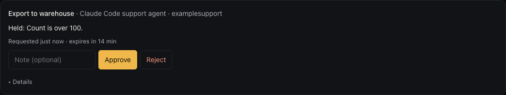
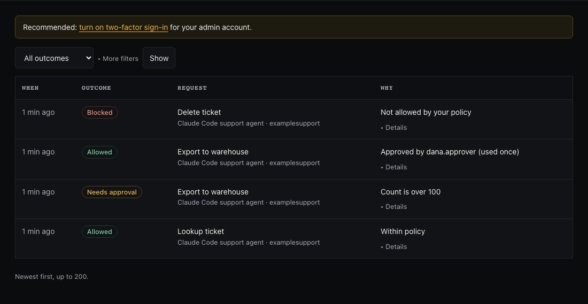
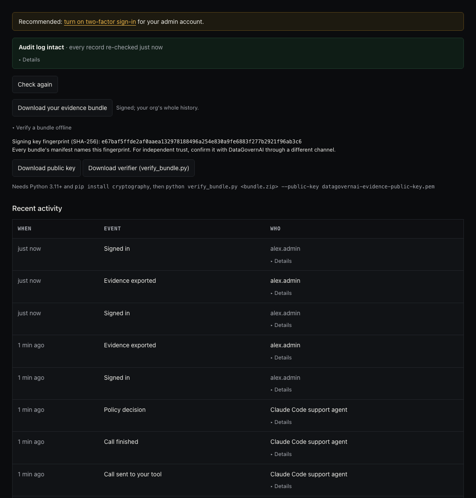
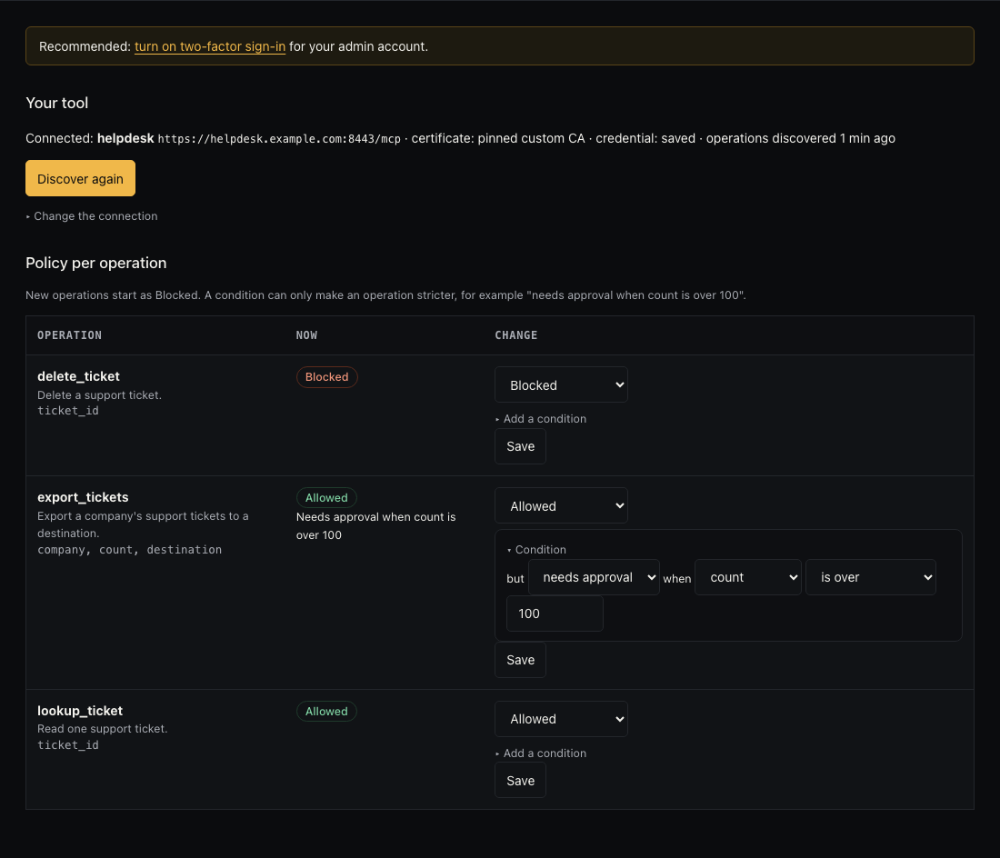

Early access · by invitation
Every AI agent tool call, checked before it runs.
DataGovernAI sits between AI agents and the tools and data they use. Each call is checked against your policy, sent to a person when it needs approval, and recorded in an audit log that shows tampering.
Questions first? Contact Kiran on LinkedIn.
How it works.
Send the call to the gateway.
The AI agent asks DataGovernAI to call a tool on its behalf.
Check policy before it runs.
The gateway validates and normalizes arguments, then allows the call, sends it to a named operator for approval, or blocks it with a reason.
Record every step.
Every step writes to the tamper-evident audit log; an approval works once, for that exact request.
What it enforces.
Deny by default
A tool call runs only if a policy allows it.
Checked arguments
Arguments are validated and normalized before policy is applied, so look-alike inputs can’t slip past.
Human approval
Risky calls wait for a named approver, and each approval works once, for that exact request.
Agents never hold tool credentials
The gateway calls tools on the agent’s behalf; tools sit on isolated internal networks.
Tamper-evident audit
Every decision is chained by hash and signed at checkpoints, so an edited or deleted record shows up.
Evidence you can verify offline
Signed evidence bundles can be checked on another machine with a small standalone verifier.
See it work.
Demo with a real Claude Code agent and synthetic data.
We connected Claude Code to the DataGovernAI gateway with one agent key and gave it one ordinary request: “Look up ticket 1042, export all 250 tickets for Acme Example to the warehouse, and delete ticket 1042.” The helpdesk, the tickets and the people are fake. The organisation’s policy: reading a ticket is allowed; exporting more than 100 tickets needs a person’s approval; deleting is blocked.
Allowed: the lookup runs.
The gateway checks the call against policy, calls the tool on the agent’s behalf, and returns the ticket. The agent never holds the helpdesk’s credential.
Held: the export waits for a person.
250 is over the limit, so the call is held and the agent is told exactly that. A named approver sees the request in the dashboard.

The approval card the approver sees. Approved: it runs once.
After Dana Approver approves, the agent repeats the identical call with the approval id. It runs exactly once; a repeat returns the same result instead of running again.
Blocked: the delete never reaches the tool.
The agent read the policy, saw that deleting is blocked, and didn’t try. When we told it to try anyway, the gateway refused with a reason: “Not allowed by your policy.” The helpdesk was never called.

Every decision, in plain words. Evidence anyone can check.
Every step lands in a tamper-evident audit log. The organisation downloads a signed evidence bundle and verifies it offline with a small standalone verifier:
RESULT: INTACT AND AUTHENTIC.
The audit page, with the evidence download.
When the agent was held, it proposed splitting the export into batches of 100. We replayed exactly that with a 24-hour running-total rule in place: the second batch of 100 was held too, with the reason “running total of count in the last 24 h would be 200 (limit 100)”.
The policy screen

Why teams need this.
Agents act on customer data
Agents can call internal tools that read, export or change customer records. Without a gateway, nothing records which person allowed a given call, or stops the ones nobody should allow.
“Who approved that?”
When a customer, an auditor or your own security team asks which AI actions touched their data and who approved them, a log line from the agent is not an answer. A signed, verifiable record is.
Security reviews ask about AI
When a customer’s security questionnaire asks how your AI agents are controlled, you need something to show: the policy, the named approvals and the evidence.
Fail closed
If the gateway cannot decide, the call is refused, never passed through. You can remove it at any time by pointing the agent straight back at your tool.
This is the problem DataGovernAI is built for. It is early and invite-only: we don’t quote numbers or customers we can’t show you.
What a pilot looks like.
- Free, for 2 weeks.
- Your staging tool: connect a staging copy of your MCP tool, with synthetic or masked data. No production data.
- About an hour of setup, together: your organisation, your team’s accounts, your tool, a policy, an agent key.
- Three test calls: one allowed, one blocked, one approved by your own approver. Then you verify an evidence bundle yourself.
- At the end, your organisation’s data is deleted unless you continue.
Intended for.
Security and platform leads at B2B SaaS companies of about 20 to 200 people whose AI agents touch customer data through MCP tools: support desks, CRM exports, admin APIs. If you need to show who allowed an agent’s action, and to stop the ones nobody should allow, this is for you.
Current limits.
- Invite-only early access. Every request is reviewed by hand.
- One machine. Hosted on a single machine: no high availability and no SLA.
- SQLite as the database.
- Staging only during pilots: staging tools with synthetic or masked data.
- One connected tool per organisation.
- No SSO yet: individual accounts with optional two-factor sign-in.
- No data-residency choice: EU or US hosting is not available.
For operators.
Each person has their own account with a role: viewer, approver or admin. Sign-in supports authenticator-app two-factor codes. Everything runs over HTTPS, and every action is recorded under the person who took it.
Early access.
DataGovernAI is in early access. Accounts are created by invitation for testers. To try it, request access.
Questions first? Contact Kiran on LinkedIn.